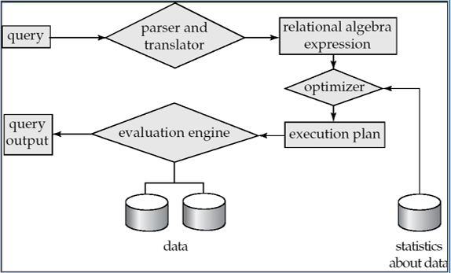
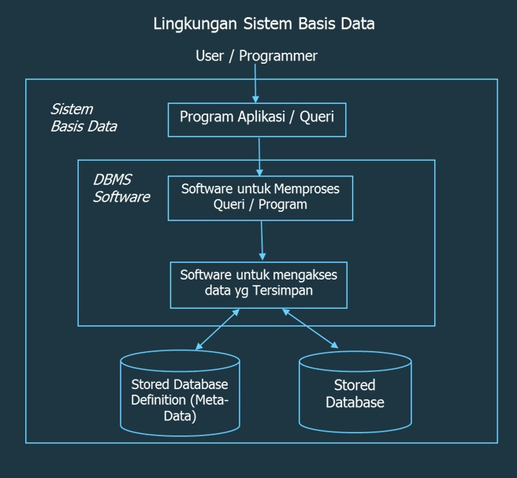

Andi Andhika
Mahasiswa | D121181511 | Founder of Villa Bukit Hijau Malino
Mahasiswa | D121181511 | Founder of Villa Bukit Hijau Malino
Proses pengambilan data dari database dalam memenuhi permintaan pemakai.
1. Parsing and translation.
2. Optimization.
3. Evaluation

1. Parsing and translation
melakukan check syntax & grammar, validasi relasi yang digunakan
mengubah query/SQL ke dalam bentuk yg bisa diolah oleh Query Processing Engine dalam bentuk
aljabar relasi, struktur (tree, graph).
2. Optimization
Membuat evaluation plan yang optimal (dengan cost yang rendah).
3. Evaluation
Pemilihan query-evaluation plan terbaik(cost) ,melakukan eksekusi terhadap query tersebut yang
menghasilkan jawaban query.
Strategi yang dipilih dalam evaluasi query tergantung pada estimasi biaya dari
masing-masing
strategi yang ada.
Optimizer Query akan membuat informasi statistik yang disimpan dalam katalog DMBS untuk
memperkirakan biaya dari sebuah rencana query.
nr= Jumlah record dalam tabel r,
br= Jumlah block yang menampung data pada tabel r,
sr= Ukuran setiap record dari tabel r (dlm Byte),
fr= blocking factor/jumlah record yg dapat ditampung oleh 1 blok,
V(A,r) = Jumlah nilai unik yang ada pada atribut A di tabel r,
SC(A,r)=rata-rata jumlah record yang memenuhi kondisi kesamaan terhadap atribut A.
Biaya evaluasi query dapat diukur dari banyaknya sumber daya sistem yang digunakan,
misl: pengaksesan disk,waktu CPU,dan waktu komunikasi.
INTERMEZZO- Sejak tahun 1960-an penggunaan basis data sudah digunakan
untuk
bidang komersial,
dimana
pemrosesan file-nya masih berbasis manajemen file tradisional. Perkembangan komputer yang
semakin
pesat diikuti dengan perkembangan perangkat lunak untuk aplikasi bisnis, sejak tahun 1970-an
sampai
awal tahun 1980 manajemen berbasis file tradisional berkembang menjadi manajemen basis data.
Di dalam manajemen basis data dikenal berbagai model data yang dapat digunakan untuk
mendeskripsikan
sebuah data dalam merancang suatu basis data. Manajemen ini memungkinkan banyak user untuk
mengakses
data secara bersamaan sehingga fasilitas yang dimiliki oleh manajemen sudah semakin banyak yaitu
fasilitas pemanipulasian data, kontrol konkurensi data, recovery data, keamanan data dan
didukung
dengan fasilitas komunikasi data karena manajemen ini sudah terhubung dengan suatu jaringan .
Perkembangan dunia usaha semakin meningkat ditunjang dengan perkembangan komunikasi yang
mempermudah
organisasi atau perusahaan untuk mengakses data, sehingga mengubah manajemen basis data menjadi
manajemen basis data tingkat lanjut didukung dengan fasilitas data warehousing dan fasilitas
basis
data berbasis web sebagai salah satu strategi organisasi dalam meningkatkan kinerja dan
keuntungan
organisasi.
Perkembangan komputer yang semakin pesat diikuti dengan perkembangan perangkat lunak
untuk aplikasi
bisnis, sejak tahun 1970-an sampai awal tahun 1980 manajemen berbasis file tradisional
berkembang
menjadi manajemen basis data. Di dalam manajemen basis data dikenal berbagai model data yang
dapat
digunakan untuk mendeskripsikan sebuah data dalam merancang suatu basis data. Manajemen ini
memungkinkan banyak user untuk mengakses data secara bersamaan sehingga fasilitas yang dimiliki
oleh
manajemen sudah semakin banyak yaitu fasilitas pemanipulasian data, kontrol konkurensi data,
recovery data, keamanan data dan didukung dengan fasilitas komunikasi data karena manajemen ini
sudah terhubung dengan suatu jaringan. Perkembangan dunia usaha semakin meningkat ditunjang
dengan
perkembangan komunikasi yang mempermudah organisasi atau perusahaan untuk mengakses data,
sehingga
mengubah manajemen basis data menjadi manajemen basis data tingkat lanjut didukung dengan
fasilitas
data warehousing dan fasilitas basis data berbasis web sebagai salah satu strategi organisasi
dalam
meningkatkan kinerja dan keuntungan organisasi. Data Collection and Database Creation (1960s and
earlier).
Evaluasi ekspresi- (1).Materialisasi,
Menampung hasil operasi menggunakan tabel temporer(dimaterialkan) yang kemudian digunakan untuk
evaluasi level berikutnya.
(2).Pipeline,
Mengganti tabel temporer dengan suatu pipeline operasi(berupa buffer). Penggunaan pipeline akan
menghilangkan biaya pembacaan dan penulisan tabel-tabel temporer.
Sebuah query adalah sebuah ekspresi bahasa yang menggambarkan data yang akan
didapatkan kembali dari sebuah database. Dalam hubungannya dengan optimisasi query, seringkali
diasumsikan bahwa query-query tersebut dinyatakan dalam sebuah dasar-dasar isi dan sekumpulan
cara orientasi, yang memberikan optimizer pilihan-pilihan diantara alternatif prosedur-prosedur
evaluasi.
Query dapat digunakan pada beberapa keadaan. Kebanyakan aplikasi nyatanya adalah
permintaan-permintaan secara langsung dari user yang memerlukan informasi tentang bentuk maupun
isi dari database. Apabila permintaan user terbatas pada sekumpulan query-query standar, maka
query-query tersebut dapat dioptimisasi secara manual oleh pemrograman prosedur-prosedur
pencarian gabungan dan membatasi input dari user pada sebuah ukuran menu. Tetapi bagaimanapun
juga, sebuah sistem optimisasi query otomatis menjadi penting apabila query-query khusus
ditanyakan dengan menggunakan bahasa query yang digunakan secara umum seperti SQL.
Aplikasi yang kedua dari query terjadi pada transaksi-transaksi yang mengubah data
yang disimpan
berdasarkan nilainya saat itu. Pada akhirnya, query seperti ekspresi-ekspresi dapat digunakan
secara internal dalam sebuah DBMS, sebagai contoh adalah untuk mengecek kebenaran akses dan
menyamakan kebenaran akses-akses yang terjadi.
Membicarakan tentang query, sangat erat hubungannya dengan cara penulisan query
tersebut ke
dalam sebuah bentuk bahasa yang mudah dimengerti. Pada umumnya, bahasa query yang digunakan
untuk mengekspresikan sebuah pernyataan dari query adalah SQL (Structure Query Language).
SQL adalah sebuah bahasa database yang luas yang memiliki statement-statement (pernyataan) untuk
definisi data, query dan update data (memperbaharui data). SQL mempunyai satu statement dasar
untuk mendapatkan kembali informasi dari sebuah database. Statement dasar dari SQL adalah
SELECT.
Hubungan Database Dengan Pemrosesan Query,
Database adalah kumpulan dari data-data yang berhubungan satu sama lainnya yang digunakan untuk
pencarian suatu data tertentu pada saat SQL query dijalankan. Sebuah database dirancang, dibuat
dan ditempati oleh data dengan tujuan tertentu. Di dalam sistem database relasional, tabel-tabel
dari database saling berhubungan satu sama lainnya. Dan sebuah tabel database akan selalu
memiliki attribute names (nama-nama attribute), relation names (nama-nama relasi), dan tuples
(record-record).
Pernyataan “f(x) adalah O(g(x))” sebagaimana didefinisikan sebelumnya, biasa ditulis
f(x) = O(g(x)) Pernyataan ini adalah penyalahgunaan notasi. Persamaan dari dua buah fungsi tidak
dinyatakan. Properti O(g(x)) tidaklah simetrik: Karena alasan ini, beberapa penulis lebih
memilih menggunakan notasi himpunan dan menulis Menganggap O(g) sebagai himpunan dari fungsi
fungsi yang didominasi oleh g. Dalam penggunaan yang lebih rumit, , O( ) dapat muncul pada
tempat yang berbeda di dalam sebuah persamaan, bahkan beberapa kali untuk masing-masing sisi.

Ketika dibandingkan Multiple Expression dan Multiple Transformation,
perbedaan terdapat pada performa kedua pendekatan tersebut, ketika Multiple Expression
dimasukkan ke dalam kolom transformasi menghasilkan waktu sekitar 02,797 detik, sedangkan
ketika dimasukkan pada Multiple Transformation menghasilkan sekitar 03,329 detik. Setiap
komponen memiliki.
Tahapan eksekusi sendiri (Validasi, Pre Execute, Execute, Post Execute) yang membutuhkan waktu
lebih lama. Jika dibandingkan antara kedua pendekatan ini ( Multiple Expression dan
Multiple Transformation ), Multiple Expression mempunyai kelebihan dari segi kinerja karena
lebih efisien sedangkan Multiple Transformation mempunyai kelebihan dari segi memberi penanganan
kesalahan yang lebih mudah.